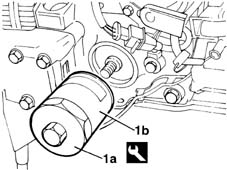
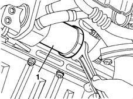

1084B30 engine oil filter r r
- Path
- Procedures > 10 ENGINE UNIT > 1084 ENGINE LUBRICATION SYSTEM > 1084B engine oil lubrication circuit > 1084B30 engine oil filter r r
- Kind
- repair procedure (removal / refitting; the operation number is the code)
- Applies to
- all engines; all production periods
- Interactive page
- https://sloeber94.github.io/elrnDB-fMltpl/en/#/2891322
Applies to: engines: 1.6 16v; all production periods
 Removing
Removing
 Refitting
RefittingOpen the bonnet lid.
Position a container beneath the sump, then undo the plug and drain the oil.
1. Use tool (1a) to unscrew and remove the cartridge of oil filter (1b).
 | Name | Country |
|---|---|---|
1a | Key | 1.860.758.000 |

Applies to: engines: 1.6 16v; all production periods
Refitting
RemovingMoisten the gasket of the new oil filter with engine oil and screw in the filter by hand.
1084A10 ENGINE OIL - Check level and top up, if necessary
Close the bonnet lid.
Applies to: engines: 1.9 JTD 8V; all production periods
Removing
RefittingPlace a container under the vehicle to collect the engine oil.
1. Remove the cartridge oil filter.

Applies to: engines: 1.9 JTD 8V; all production periods
Refitting
RemovingScrew in the oil filter.
Check the amount of oil in the engine.
Top up using the same engine oil if necessary.